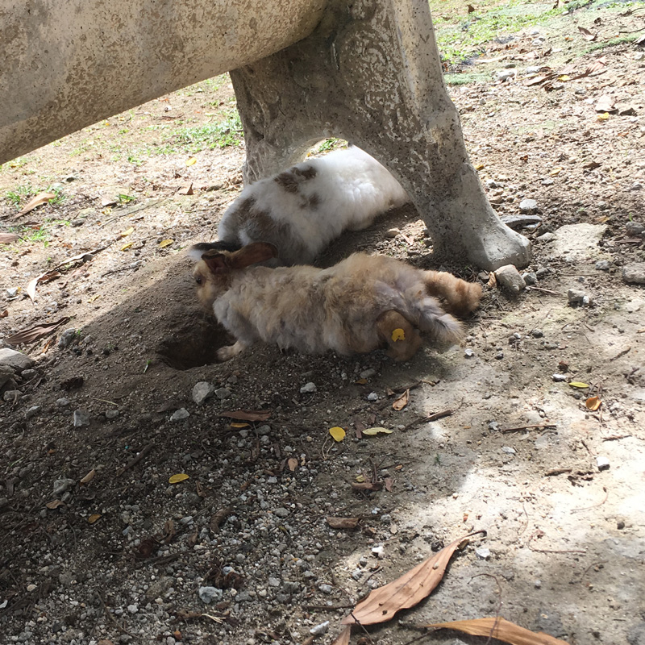
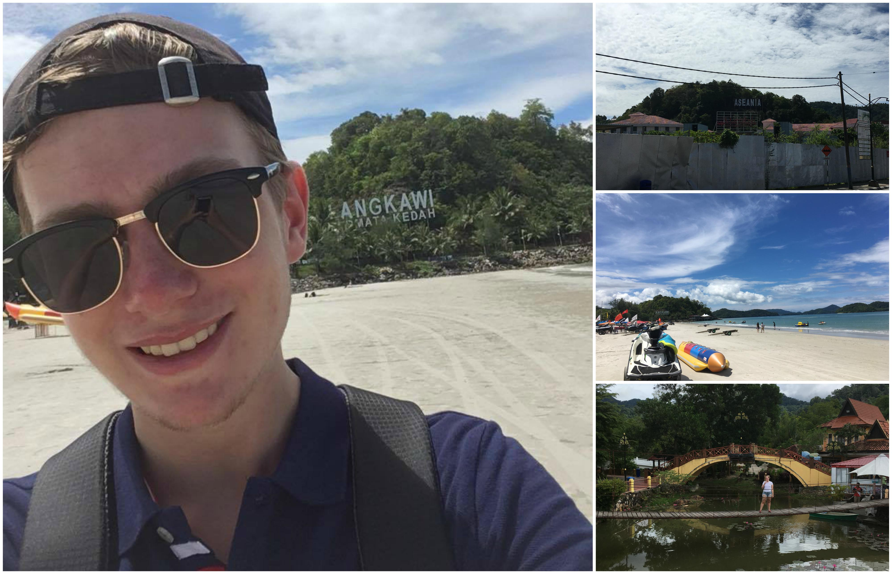

Langkawi so far
Vi har nu varit på Langkawi i knappt 4 dagar och tiden känns som den gått ganska så fort. Vi har hunnit besöka öns cable car, eller sky taxi, eller vad man nu vill kalla det. Dock till vår stora besvikelse var den stängd för sin årliga renovering, vilket innebar att vi inte kunde åka upp på öns högsta(?) berg och gå på sky bridgen. Detta var tyvärr öns populäraste attraktion så väldigt synd att vi missar den. Dagen efter vi lämnar Langkawi öppnar den igen, förstås.

Istället fick vi underhålla oss med att mata och klappa kaniner som fanns vid sidan om vad man får kalla nöjesparksliknande attraktioner. Stället cable caren fanns på hette "Oriental Village", men kändes lite mer som ett nöjesfält i lågsäsong. Allt som allt är det inte mycket folk här på ön, känns det som i alla fall. Vi har inte sett så många turister och när vi väl gör det reflekteras inte mängden vi upplever i de Tripadvisor-reviewsen jag läst. Där pratar folk om långa köer och mycket folk, men vi har inte sett något av det. Kaninerna var i vilket fall som helst mycket söta, och hungriga, så vi kan inte klaga.
Det var gårdagen, idag så besökte vi Cenang Beach. Vilket är öns metropol för sandstrand, restauranger, hotell, hostels, och shopping. Så nu vet vi att om man ska tillbaka till den här ön ska man kanske överväga att bo där, och inte som oss i Kuah, 30 minuter med taxi bort. Inte för att det var dyrt att ta taxi, det finns en hel flotta bilar utanför hotellet som kör oss till andra sidan ön (där Cenang ligger) för 30 ringgit, eller 60 svenska kronor då. Men man vill ju gärna ha saker som sandstrand och restauranger inom gångväg, vilket vi också i och för sig har. Men vår stad verkar vara lightversionen av Cenang.
Sen bor vi också på ett islamic hotel, tydligen. Deras slogan är:
Islamic, Friendly, Hostpitality
Det är väl i sig inget fel med det, men det är typ vi, ett äldre brittiskt par, och förvånansvärt många muslimer som bor här. Det reflekteras också i form av vad som serveras till frukost, vilka faciliteter som finns (bönerum, med allmänt utrop på utsatta tider). Det var billigt, och fått bra betyg, så vi kan verkligen inte klaga på den här punkten heller. Känns bara som man är lite främmande för resten av gästerna och personalen, som om dem tänker: "Varför valde dem det här hotellet?" - vilket jag nu i efterhand också undrar. Men det är så det går om man inte läser recensionerna och bara går efter betyget.

Tillbaka till Cenang Beach! Vi gick huvudgatan upp och ned för att se oss omkring en del. Taxichaufören sa att man kan gå ner till stranden "var som helst", vilket var sanning med modifikation. Efter gatupatrullerandet gick vi in på gården till ett hotell, där vi äntligen kunde komma åt stranden. Inte särskilt självklart att man måste gå igenom hotell eller restauranger för att komma till stranden. Men det var värt det! Så vi gick stranden upp och ned innan vi gick tillbaka till huvudgatan och åt lunch.
Efter det åkte vi tillbaka till hotellet och var vi poolen ett tag, sen var vi på rummet tills vi gick och åt kvällsmat på KFC, på andra sidan gatan. Varför KFC och inte någon lokal smakupplevelse? Jag måste säga att jag är lite besviken på hur den asiatiska maten vi ätit smakat. Har du ätit en har du ätit alla, och allt som är starkt smakar bara starkt för mig då jag inte är van vid sådan mat. Så visst pad thai är väldigt gott, och andra rätter för den delen också, men det är inte revolutionerande gott. Så KFC är minst lika intressant att besöka i nuläget. Sen är portionerna väldigt varierande i storlek, ibland får man bara en ynka liten talrik med en kvarts portion. Man får ju vad man betalar för (6 ringgit för den portionen jag syftar på), men det är lite drygt när man är hungrig igen en halvtimme senare.
Nuvarande betyg på Langkawi är bra, men verkligen inte lika bra som man kunde hoppats på. Fortsättning följer dock!